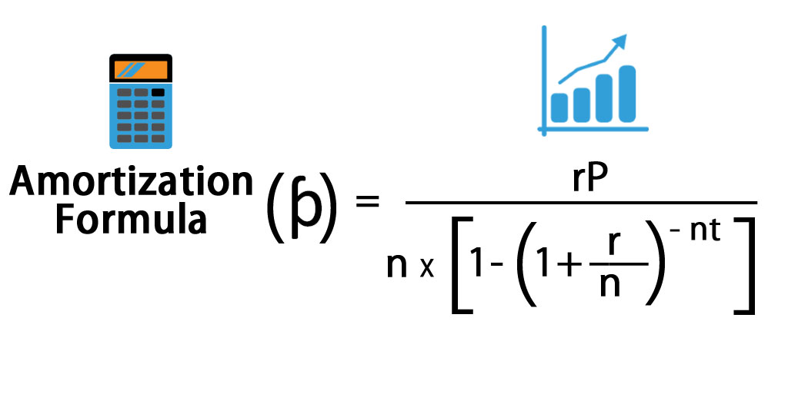

A function is the building block of a data recipe (a script).
You can think of functions as input-output machines that take raw data and transform it into useful statistics.
They accepts arguments (data or parameters), and return the requested calculation or transformation.
For example, the mean() function requires a vector of measurements as the input and return the average measure for the group as the output.
function()
Let’s look at a slightly more comlicated example by creating an amortization calculator to determine monthly payments that would be required from a home mortgage loan.
Example monthly payment based upon loan amount (P), interest rate (R), and time period of repayment (T).
Where:
A mortgage calculator considers the total loan amount (the principal), the interest rate or APR (annual percentage rate), and the period of the loan in order to determine how much needs to be paid each month so that payments are distributed equally across the loan term. If we look up a formula, we will find:

We can simplify this formula a bit by putting everything in monthly periods:
\[ PAYMENTS = \frac{principal \cdot interest \ rate}{1-(1+interest \ rate)^{- \ months}} \]
Where:
When we translate this mathematical formula into R code, the new function will look like this:
calcMortgage <- function( principal, years, APR )
{
months <- years * 12 # covert years to months
int.rate <- APR / 12 # convert annual rate to monthly
# amortization formula
monthly.payment <- ( principal * int.rate ) /
(1 - (1 + int.rate)^(-months) )
monthly.payment <- round( monthly.payment, 2 )
return( monthly.payment )
}What happens if you omit an argument from the function? Why?
We can add default values for arguments. These defaults allow us to utilize the function without specifying values for those arguments.
calcMortgage <- function( principal, years=30, APR=0.05 )
{
months <- years * 12 # covert years to months
int.rate <- APR / 12 # convert annual rate to monthly
# amortization formula
monthly.payment <- ( principal * int.rate ) /
(1 - (1 + int.rate)^(-months) )
monthly.payment <- round( monthly.payment, 2 )
return( monthly.payment )
}Note that calcMortgage( principal=100000 ) now works because the function uses the default values for years and APR.
Can you still use custom values for those arguments after defaults are set?
An explicit call to arguments always uses the formal argument name such as principal=100000.
You can, however, also use implicit argument calls. These rely on the order arguments are specified in the function, and the order of your values in your call.
Implicit arguments calls can be risky, however, because it is very easy to mix them up.
Which of these calculations is correct?
Explain why.
Assignment is the process of assigning a name to an object or value in order to store the data for future use and allow it to be referenced later.
We use assignment in data recipes (scripts) to save values, and in functions to assign values to specific arguments. Note that we use different assignment operators in each case.
Object assignment uses the arrow operator.
Argument assignment inside a function uses the equal sign.
principal <- 100000 # never use equals here
calcMortgage( principal=100000 ) # never use arrows hereCreate a function to convert Fahrenheit temperatures to Celsius.
round( number, decimals ) function to simplify output.\[ celsius = ( \ fahrenheit − 32 \ ) × \frac{5}{9} \]
If you want to check your work, 212 degees Fahrenheit is equivalent to 100 degrees Celsius.
Can you use this function to convert from Celsius to Fahrenheit?